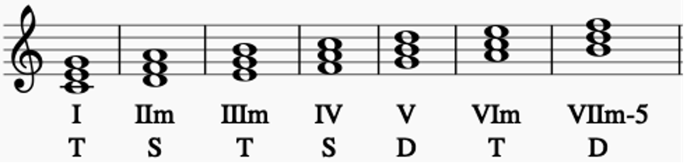
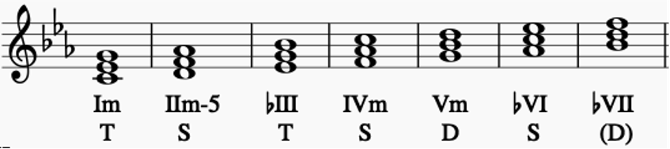

| 種類 | 説明 |
|---|---|
| トニック(T) | 調の特性を決める第三音を含み、アヴォイドノートである第四音を含まないコード。安定感があり、落ち着いたサウンドを持つ。 |
| ドミナント(D) | 主音へと半音上がって解決しようとする不安定な導音(第七音)を持っているコード。ⅤからⅠへの動きが最も強い解決感が得られるとされている(ドミナントモーション)。 |
| サブドミナント(S) | トニック、ドミナントに分類されないコード。アヴォイドノートを持ち、第三音、導音を含まない。 |
長調

短調(自然短音階)

終止形の和音進行
| 型 | 進行 |
|---|---|
| 第1型(K1) | T→D→T |
| 第2型(K2) | T→S→D→T |
| 第3型(K3) | T→S→T |
コード同士の強い結びつきがある古典的な進行
| 種類 | 進行 |
|---|---|
| 強進行 | 四度上行(例:Ⅴ→Ⅰ、Ⅲm→Ⅵm) |
| 準強進行 | 二度上行(例:Ⅳ→Ⅴ)、三度下行(例:Ⅵm→Ⅳ)、四度下行(例:Ⅰ→Ⅴ) |
| 弱進行 | 二度下行(例:Ⅴ→Ⅳ)、三度上行(例:Ⅰ→Ⅲm)、四度下行(例:Ⅴ→Ⅱm) |
※四度下行は基本的に弱進行であるが、Ⅰ→Ⅴ、Ⅳ→Ⅰのみ準強進行とされる
| 種類 | コード進行 | 例(Key=C) |
|---|---|---|
| カノン進行 | Ⅰ→Ⅴ→Ⅵm→Ⅲm→Ⅳ→Ⅰ→Ⅳ→Ⅴ | C→G→Am→Em→F→C→F→G |
| ベースが下降するカノン進行 | Ⅰ→ⅤonⅦ→Ⅵm→ⅠonⅤ→Ⅳ→ⅠonⅢ→Ⅱm→Ⅴ | C→GonB→Am→ConG→F→ConE→Dm→G |
| 王道進行 | Ⅳ→Ⅴ→Ⅲm→Ⅵm | F→G→Em→Am |
| 王道進行の派生形 | Ⅱm→Ⅴ→Ⅲm→Ⅵm | Dm→G→Em→Am |
| 小室進行 | Ⅵm→Ⅳ→Ⅴ→Ⅰ | Am→F→G→C |
| Just The Two of Us進行(丸サ進行) | Ⅳ(M7)→Ⅲ(7)→Ⅵm(7)→Ⅰ(7) | F(M7)→E(7)→Am(7)→C(7) |
| ポップパンク進行1(Let It Be進行) | Ⅰ→Ⅴ→Ⅵm→Ⅳ | C→G→Am→F |
| ポップパンク進行2 | Ⅳ→Ⅰ→Ⅴ→Ⅵm | F→C→G→Am |
| ポップパンク進行3 | Ⅵm→Ⅳ→Ⅰ→Ⅴ | Am→F→C→G |
| 循環進行の代表形(ブルームーン進行) | Ⅰ→Ⅵm→Ⅱm→Ⅴ | C→Am→Dm→G |
| 逆循環進行の代表形 | Ⅱm→Ⅴ→Ⅰ→Ⅵm | Dm→G→C→Am |
ダイアトニックコードの「Ⅰ」以外のコードに対してドミナントモーションを作る「Ⅴ7」のこと
例: Key=C
C→Am→Dm→G
2コード目のAmに対し、Key=Amとした時のV7(=E7)を直前に加える
C→E7→Am→Dm→G
セカンダリードミナントコードを「Ⅴ7」とした時に、「Ⅱm7→Ⅴ7→Ⅰ」(ツーファイブワン)となるように足す「Ⅱm7」のこと
例: Key=C
C→E7→Am→Dm→G
Key=Amとした時のV7(=E7)に対し、Ⅱm7(=Bm7)を直前に加える
C→Bm7→E7→Am→Dm→G